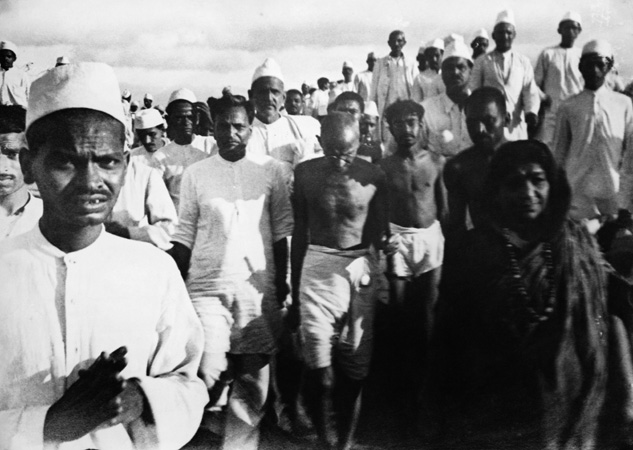

Event:
Throughout his career, Gandhi had led numerous creative pacifist movements, including the homespun movement, and national prayer and many other events. (Events) The one that represents his ideas the most is the salt march he organized in 193025:
The INC invited Gandhi to organize another movement. Even though Gandhi claimed that he retired, he was motivated by the enthusiasm of his fellow Indians, and returned to politics.
The major goal of Gandhi’s events is to prove in every aspect that the independence of India would bring benefits. (Speech) In this case, Gandhi is proving that the independence of economy is beneficial.
Salt was a government monopoly that was heavily taxed. Therefore the movement can be easily understood by Indians at all levels of society. Before Gandhi began his protest, he offered the British government a series of economic and social reforms that included the reduction of military expenditures but British rejected these demands.
On March 5, Gandhi declared that he and his followers would journey to the coast with copies of the Gita--a Hindu holy book. Once they reached the ocean, they would make salt, disobeying the law and deliberately opposing British rule over India. Some of them was captured by the army, but eventually the army realized that they shouldn’t harm innocent civilians and supported the movement.
The self-producing salt proved to Indians that it is better to have an independent economy and factory. Also, the early responses by the army alerted them how violent the government is. As a result, many more joined the INC.8
This movement represents Gandhi’s ideas in two ways. First, no one in the marching team used any violence, representing Gandhi’s pacifism. Second, it shows how the government is being brutal while the protestors are reasonable.
